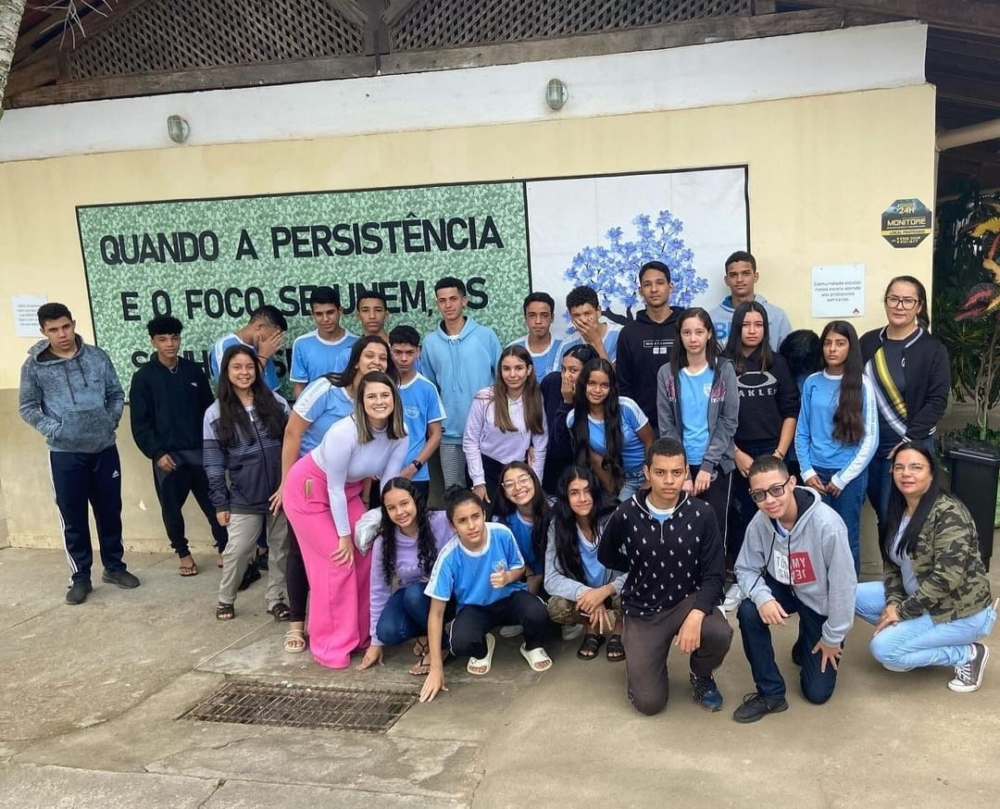
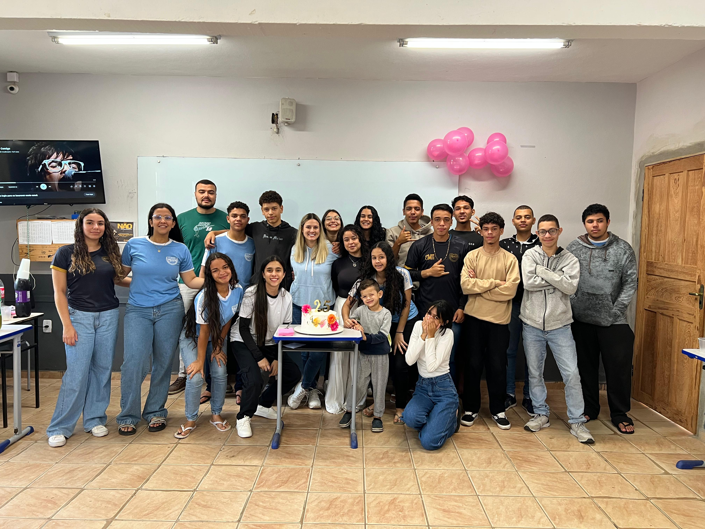
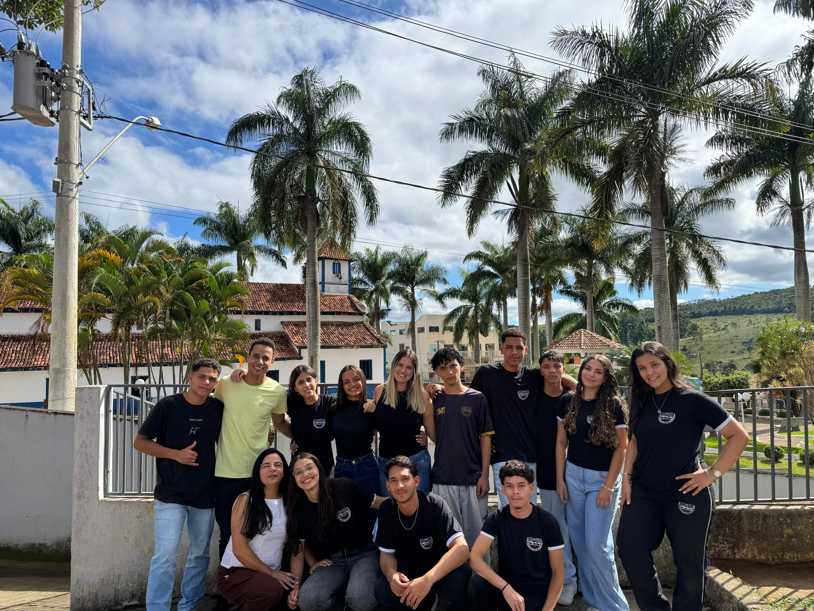

Esta linha do tempo apresenta os principais momentos da trajetória do curso técnico, destacando conquistas, projetos, eventos, viagens técnicas e atividades que marcaram a história dos alunos ao longo dos anos.
Cada etapa representa experiências importantes que contribuíram para o crescimento acadêmico, profissional e pessoal dos estudantes, demonstrando a evolução constante da turma e do curso.
Explore os acontecimentos que fizeram parte dessa jornada e conheça os marcos que ajudaram a construir a identidade do Curso Técnico Integrado.

Nosso primeiro ano foi marcado pela adaptação a uma nova realidade. Éramos uma turma bastante imatura, com diferenças de opiniões, conflitos frequentes e pouca comunicação entre nós. Apesar dos desafios, começamos a construir as primeiras amizades e a dar os primeiros passos em nossa trajetória no Curso Técnico.

Com o passar do tempo, amadurecemos como turma. O convívio se tornou mais harmonioso, a participação dos alunos aumentou e a proatividade passou a fazer parte da rotina de muitos colegas. Os conflitos diminuíram significativamente, embora ainda houvesse aspectos que precisavam ser melhorados para fortalecer ainda mais nossa união.

O retorno às aulas trouxe uma mudança importante em nossa forma de agir. A maturidade, o respeito e o diálogo passaram a estar mais presentes no dia a dia da turma. Demonstramos maior interesse pelas disciplinas do curso e um empenho cada vez maior nas atividades, consolidando a evolução que vínhamos construindo ao longo dos anos.
Chegamos ao último capítulo dessa jornada. Depois de anos de aprendizado, desafios, conquistas e crescimento pessoal, concluímos o Curso Técnico levando conosco não apenas conhecimentos profissionais, mas também amizades, experiências e memórias que marcarão para sempre nossa trajetória.